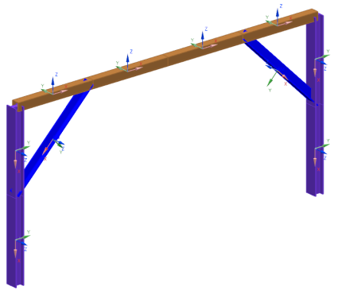

可以使用网格显示对话框中的选项来控制横截面显示，您可以：
使横截面永久显示
控制横截面方向以及方向矢量如何显示

要把梁单元渲染为实体，选择网格显示对话框中的实体选项，软件将沿单元长度方向拉伸横截面。
可以使用实体横截面显示来：
识别梁方向或者截面定义中的问题
提供模型的实际外观显示
从网格显示对话框中显示截面列表中选择曲线时，软件将在网格中各个节点创建永久线框显示以显示横截面。
可以使用线框横截面显示来。
显示节点或底层几何体
减少系统资源占用